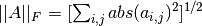

scipy.linalg.norm¶
- scipy.linalg.norm(a, ord=None)[source]¶
Matrix or vector norm.
This function is able to return one of seven different matrix norms, or one of an infinite number of vector norms (described below), depending on the value of the ord parameter.
Parameters : x : {(M,), (M, N)} array_like
Input array.
ord : {non-zero int, inf, -inf, ‘fro’}, optional
Order of the norm (see table under Notes). inf means numpy’s inf object.
Returns : n : float
Norm of the matrix or vector.
Notes
For values of ord <= 0, the result is, strictly speaking, not a mathematical ‘norm’, but it may still be useful for various numerical purposes.
The following norms can be calculated:
ord norm for matrices norm for vectors None Frobenius norm 2-norm ‘fro’ Frobenius norm – inf max(sum(abs(x), axis=1)) max(abs(x)) -inf min(sum(abs(x), axis=1)) min(abs(x)) 0 – sum(x != 0) 1 max(sum(abs(x), axis=0)) as below -1 min(sum(abs(x), axis=0)) as below 2 2-norm (largest sing. value) as below -2 smallest singular value as below other – sum(abs(x)**ord)**(1./ord) The Frobenius norm is given by [R50]:
References
[R50] (1, 2) G. H. Golub and C. F. Van Loan, Matrix Computations, Baltimore, MD, Johns Hopkins University Press, 1985, pg. 15 Examples
>>> from numpy import linalg as LA >>> a = np.arange(9) - 4 >>> a array([-4, -3, -2, -1, 0, 1, 2, 3, 4]) >>> b = a.reshape((3, 3)) >>> b array([[-4, -3, -2], [-1, 0, 1], [ 2, 3, 4]])
>>> LA.norm(a) 7.745966692414834 >>> LA.norm(b) 7.745966692414834 >>> LA.norm(b, 'fro') 7.745966692414834 >>> LA.norm(a, np.inf) 4 >>> LA.norm(b, np.inf) 9 >>> LA.norm(a, -np.inf) 0 >>> LA.norm(b, -np.inf) 2
>>> LA.norm(a, 1) 20 >>> LA.norm(b, 1) 7 >>> LA.norm(a, -1) -4.6566128774142013e-010 >>> LA.norm(b, -1) 6 >>> LA.norm(a, 2) 7.745966692414834 >>> LA.norm(b, 2) 7.3484692283495345
>>> LA.norm(a, -2) nan >>> LA.norm(b, -2) 1.8570331885190563e-016 >>> LA.norm(a, 3) 5.8480354764257312 >>> LA.norm(a, -3) nan